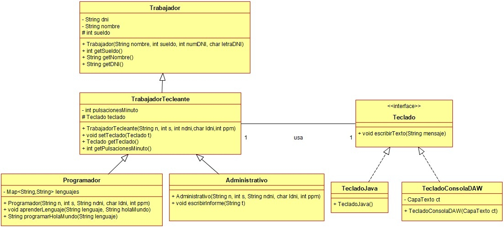

Ejercicio 8 : Siguiendo con el mismo proyecto y diagrama del ejercicio anterior, programa las clases Trabajador, TrabajadorTecleante y Administrativo:

-
Un Trabajador es un empleado que tiene un nombre, sueldo, dni (no es necesario comprobar que la letra es correcta) y métodos getters.
-
Un TrabajadorTecleante es un tipo de empleado que utiliza un teclado para trabajar, y además tiene unas determinadas pulsaciones por minuto.
-
Un Administrativo es un trabajador que escribe un informe en el teclado que está usando. Además, le pone la fecha y hora antes de escribirlo.